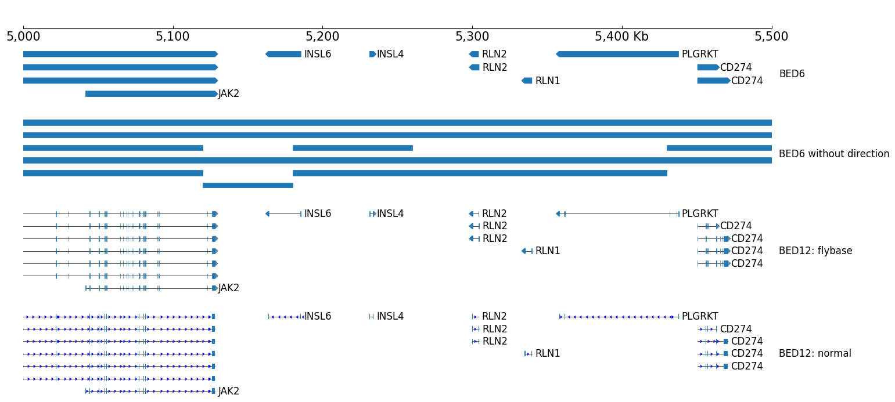
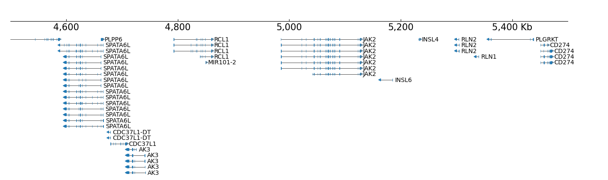
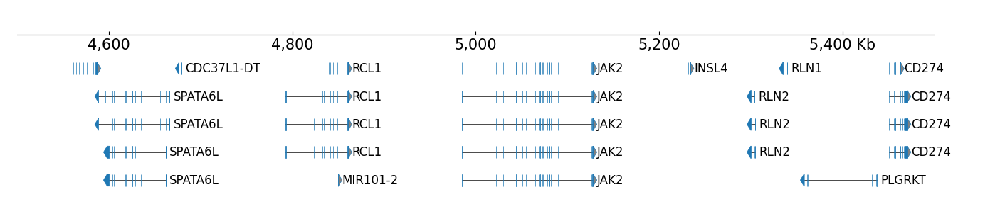
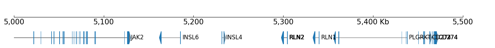
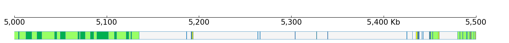
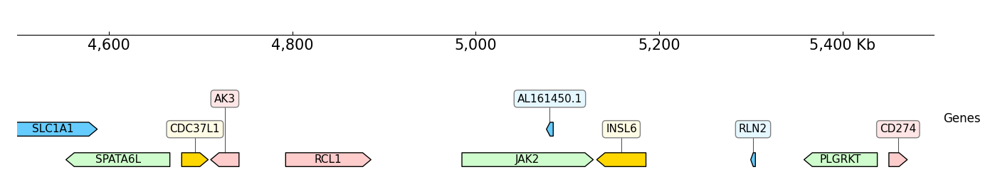
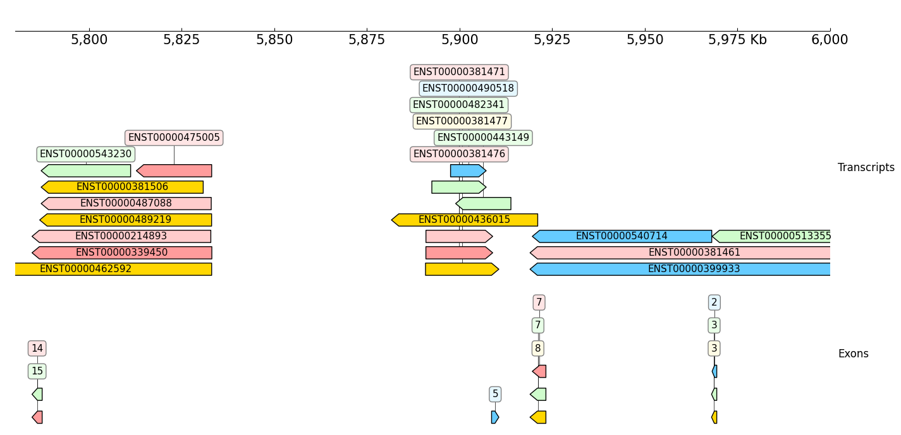
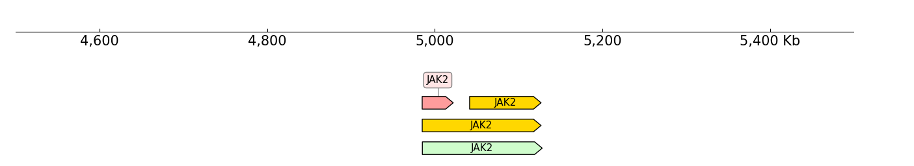

DNA features
[1]:
import coolbox
from coolbox.api import *
coolbox.__version__
[1]:
'0.4.0'
[2]:
test_data_dir = "../../../tests/test_data/"
test_interval = "chr9:4500000-5500000"
example_bed6 = f"{test_data_dir}/bed6_chr9_4000000_6000000.bed"
example_bed9 = f"{test_data_dir}/bed9_chr9_4000000_6000000.bed"
example_bed12 = f"{test_data_dir}/bed_chr9_4000000_6000000.bed"
example_tad = f"{test_data_dir}/tad_chr9_4000000_6000000.bed"
BED file
gene style
BED12 format can plot fish-bone like shapes, BED6 and BED9 can not:
[3]:
frame = XAxis()
frame += BED(example_bed6) + Title("BED6")
frame += Spacer(1) + BED(example_tad, labels=False) + Title("BED6 without direction")
frame += Spacer(1) + BED(example_bed12, gene_style='flybase') + Title("BED12: flybase")
frame += Spacer(1) + BED(example_bed12, gene_style='normal') + Title("BED12: normal")
frame.plot("chr9:5000000-5500000")
[3]:

layout
The default height of BED is 'auto', it means the height is auto-growth, we can set the heigh of one row by the row_height parameter:
[4]:
frame = XAxis() + BED(example_bed12, row_height=1.0)
frame.plot(test_interval)
[4]:

If you want fixed track height, just specify with 'height' parameter:
[5]:
frame = XAxis() + BED(example_bed12, height=8, fontsize=10)
frame.plot(test_interval)
[5]:

The number of rows to display can be limited by setting num_rows parameter:
[6]:
frame = XAxis() + BED(example_bed12, row_height=1.0, num_rows=5)
frame.plot(test_interval)
[6]:

And rows can be collapsed:
[7]:
frame = XAxis() + BED(example_bed12, display='collapsed')
frame.plot("chr9:5000000-5500000")
[7]:

This can used for visualize the ChromStates:
[8]:
frame = XAxis() + BED(f"{test_data_dir}/bed_chr9_4000000_6000000_chromstates.bed", display='collapsed') + TrackHeight(0.6)
frame.plot("chr9:5000000-5500000")
[8]:

[9]:
bed = BED(f"{test_data_dir}/bed_chr9_4000000_6000000_chromstates.bed", display='collapsed')
[10]:
bed.fetch_data(GenomeRange("chr9:5000000-5500000"))
[10]:
| chrom | start | end | name | score | strand | thick_start | thick_end | rgb | |
|---|---|---|---|---|---|---|---|---|---|
| 0 | chr9 | 4996201 | 5004200 | 11_Weak_Txn | 0.0 | . | 4996200 | 5004200 | 153,255,102 |
| 1 | chr9 | 5004201 | 5005000 | 10_Txn_Elongation | 0.0 | . | 5004200 | 5005000 | 0,176,80 |
| 2 | chr9 | 5005001 | 5005200 | 15_Repetitive/CNV | 0.0 | . | 5005000 | 5005200 | 245,245,245 |
| 3 | chr9 | 5005201 | 5012600 | 11_Weak_Txn | 0.0 | . | 5005200 | 5012600 | 153,255,102 |
| 4 | chr9 | 5012601 | 5018600 | 10_Txn_Elongation | 0.0 | . | 5012600 | 5018600 | 0,176,80 |
| ... | ... | ... | ... | ... | ... | ... | ... | ... | ... |
| 86 | chr9 | 5497401 | 5497600 | 7_Weak_Enhancer | 0.0 | . | 5497400 | 5497600 | 255,252,4 |
| 87 | chr9 | 5497601 | 5499000 | 11_Weak_Txn | 0.0 | . | 5497600 | 5499000 | 153,255,102 |
| 88 | chr9 | 5499001 | 5499600 | 7_Weak_Enhancer | 0.0 | . | 5499000 | 5499600 | 255,252,4 |
| 89 | chr9 | 5499601 | 5499800 | 5_Strong_Enhancer | 0.0 | . | 5499600 | 5499800 | 250,202,0 |
| 90 | chr9 | 5499801 | 5500800 | 4_Strong_Enhancer | 0.0 | . | 5499800 | 5500800 | 250,202,0 |
91 rows × 9 columns
GTF file
In default GTF only plot genes with dna-feature-viewer.
[11]:
example_gtf = f"{test_data_dir}/gtf_chr9_4000000_6000000.gtf"
frame = XAxis() + GTF(example_gtf) + Title("Genes")
frame.plot(test_interval)
[11]:

Show transcripts and exons, 'name_attr' controls show which attribute:
[12]:
frame = XAxis()
frame += GTF(example_gtf, row_filter="type == 'transcript'", name_attr='transcript_id') + TrackHeight(9) + Title("Transcripts")
frame += GTF(example_gtf, row_filter="type == 'exon'", name_attr='exon_number') + TrackHeight(6) + Title("Exons")
frame.plot("chr9:5780000-6000000")
[12]:

Attribute means the features in the attribute columns of the GTF:
[13]:
gtf = GTF(example_gtf)
df = gtf.fetch_data(GenomeRange(test_interval))
df.head(2)
[13]:
| seqname | source | type | start | end | score | strand | frame | attributes | feature_name | |
|---|---|---|---|---|---|---|---|---|---|---|
| 0 | chr9 | protein_coding | gene | 4490444 | 4587469 | NaN | + | NaN | gene_biotype "protein_coding"; gene_id "ENSG00... | SLC1A1 |
| 1 | chr9 | protein_coding | transcript | 4490444 | 4587469 | NaN | + | NaN | ccds_id "CCDS6452"; gene_biotype "protein_codi... | SLC1A1 |
row filter can also filter the rows by other columns, for example only show the transcripts from JAK2 gene:
[14]:
frame = XAxis()
frame += GTF(example_gtf, row_filter="type == 'transcript';feature_name == 'JAK2'")
frame.plot(test_interval)
[14]:
